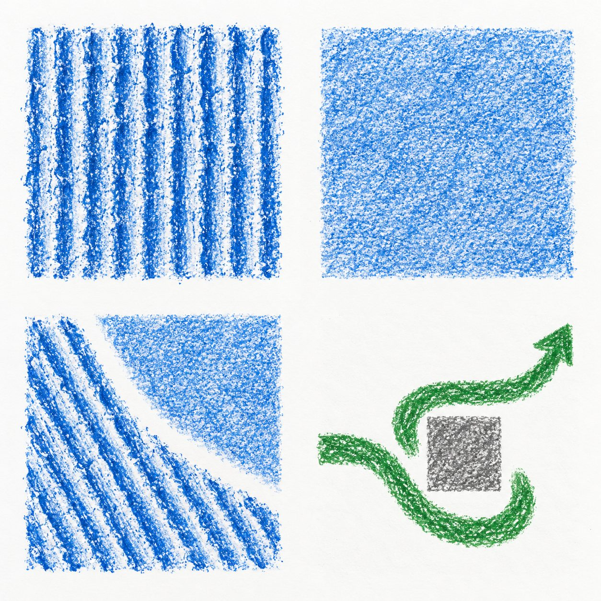

Creative Arts · BUILD · Spring 1 Week 4 · Explore
A piece with my new texture
Tuesday 26 January 2027 · P1 · 40 minutes
Weekly outcome: Try a new expressive technique.
I can use my new texture in a small piece.
Today I can
I can use the new way I tried.
I can keep or change one part for a reason.
I can show what I did in my arts log.
In your book or arts log. You may point, speak, sign, draw or direct an adult.
Use an invented idea. You may share privately.
texture
How a surface feels or looks.
rub
Move a tool back and forth.
light
With a small amount of force.
test
A small try before a piece.
A choice and a new start
0–3 minutesFind the tests you made last time.
Point to the one you chose.
Today you can use it in a small piece.
What to say
Retrieve the real tests and confirmed reason. If absent or missing, make two tiny tests now with adult help; record them as today rather than inventing earlier work. Offer the same silent movement route.
What good looks like
Pupil reconnects with a real choice or makes an honest new start.
Materials-free fallback
Recall or repeat the witnessed smooth and stop-start motions. Pupil confirms the choice.
Check and response
A new start is valid. Do not claim an earlier trial without evidence.
A feature to notice
3–6 minutesWhich texture did you choose?
What could it show in your piece?
You may keep your idea or change it.
What to say
Compare the two tests. Ask the pupil to name or show one feature and a reason. A change of idea is allowed and goes in the log.
What good looks like
Pupil links a visible or movement feature to an intended feeling.
Materials-free fallback
Pupil chooses a silent movement texture and an invented feeling.
Check and response
The maker chooses meaning. Busy marks can feel joyful, tense or something else.
The method in small steps
6–12 minutesWatch a small texture piece.
Put paper over the safe card.
Rub lightly in two small spaces.
Leave a gap. Check your idea.
Step by step demonstration
- Show yesterday tests and state the maker choice. Put a fresh small sheet over ridged card.
- Rub one patch gently. Leave a gap before a second patch.
- Make the second patch lighter. Point out the actual difference in marks.
- Explain the decision. Show how the tests and piece stay together with a true log entry.
Original examples to compare

Two texture tests
Original class models, not pupil evidence.
Teacher example only: the ridged marks suggest energy to me. Another maker may read them as calm.
Teacher example only: I used a smooth glide and stop-start hand movement. I chose the stops for surprise. This is movement evidence, not a rubbing.
What to say
My invented idea is energy settling down. On one small sheet I rub a ridged patch on the left and a lighter patch on the right, leaving a gap. I keep the same crayon so I can see texture and pressure. I look back at my tests. I keep the left patch and lighten the right because I want less busy marks at the end. I use the side of the crayon, with fingers outside the rubbing area. This is one adult idea, not a design to copy.
What good looks like
Adult shows the technique, a deliberate choice and a small change; the pupil can make a different arrangement.
Materials-free fallback
Show stop-start movement, hold still for two counts, then a smooth glide and hold. Explain the shift in texture. Use a comfortable range or direct the adult.
Check and response
CfU: How is this made: drawing each ridge, or rubbing over card under the paper? Rubbing over card. Re-show if needed.
A shared choice
12–18 minutesChoose one texture for the class piece.
Where will it go?
Try one small change.
Keep or change it for a reason.
Check together
An adult prefers a different layout. What can the pupil do?
What to say
Let pupils direct the class trial. Change the pressure or space, not every feature at once. Hinge: an adult likes a different layout. A: the pupil must copy it; B: the pupil can keep their own choice and explain.
What good looks like
Pupil retains ownership and selects B.
Materials-free fallback
Pupil directs a smaller movement or a longer still pause and chooses its effect.
Check and response
B. If A, model listening to advice then choosing. Parallel check: may two makers choose different textures for calm? Yes.
Your own making
18–32 minutesMake a small piece with your new texture.
Use your tests to help you choose.
Check one part. Keep it or change it.
Keep your work and your own reason.
Supported
Find or remake two small tests.
Choose a texture and direct the adult.
Make a small piece or silent sequence.
Show one choice and your reason.
Independent
Use your chosen texture in a small piece.
Check one feature against your idea.
Keep or change it for a reason.
Keep your work and dated arts-log entry.
Aspire
Complete the same small piece.
Compare a first version with one small change.
Explain what the change does to the feeling.
Choose the version you want to keep.
What to say
Use one small sheet. Place safe card beneath it and rub gently with the side of the crayon. Make two areas with a chosen space or pressure difference. A pupil may use just one texture deliberately. Stop before paper tears. Ask the pupil to choose one keep-or-change decision; do not make that decision for them. Record whether the piece is finished or still in progress.
What good looks like
A small original piece shows an intentional use of rubbing and a reasoned choice, or a witnessed movement piece shows contrasting movement textures.
Materials-free fallback
Use or direct a short silent sequence: one texture, a still pose, a second texture, then stop. Choose the size or pace. Record the real sequence and the pupil meaning.
Check and response
Example only: I kept the rough patch and made the next one light because I wanted the energy to fade. A one-texture piece can also be deliberate.
A check and a reason
32–37 minutesShow one part you chose.
Say: I kept or changed ___ because ___.
You can share with just an adult.
Tidy your space.
What to say
Ask the maker whether the piece matches their idea. A listener notices one feature without guessing personal feelings. Use the last two minutes to collect crayons and card, remove scraps and store the work flat.
What good looks like
Pupil confirms one decision and the real completion stage.
Materials-free fallback
Pupil repeats or directs the final movement once. Adult reads the description back for correction.
Check and response
Keep and change are both valid when the reason relates to the intended effect.
Your arts log
37–40 minutesArts log: I tried the new way by ___.
I made ___.
I kept or changed ___ because ___.
Next I would ___.
Type instead
Your responses save on this device. They are not sent anywhere.
What to say
Retain the earlier tests with the actual piece or witness note. Record date, technique, choice, change and help. The pupil checks any scribed words. Do not claim rubbing for a movement-only response.
What good looks like
The record distinguishes tests, actual piece and a next step.
Materials-free fallback
Use a confirmed oral entry; record at the next available opportunity.
Check and response
Example only: I made a silent texture sequence. I changed the last move to a smooth glide to show calm.